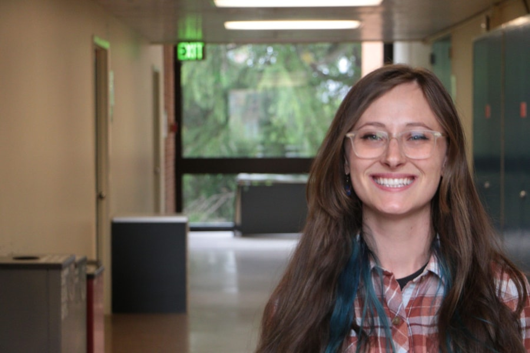
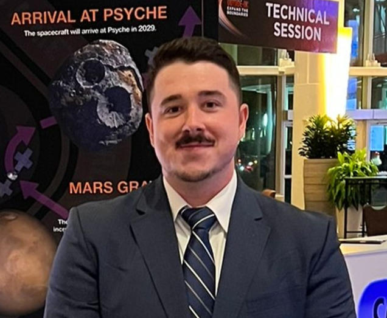
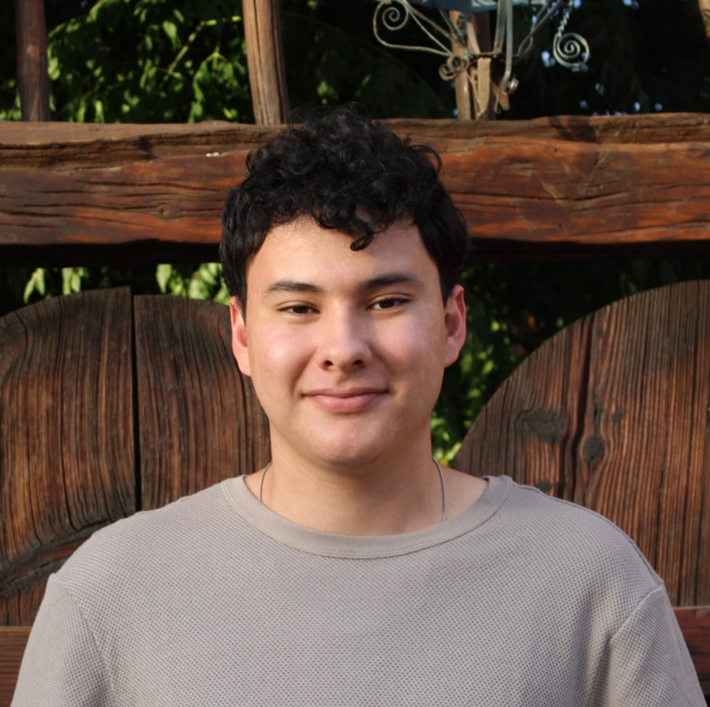
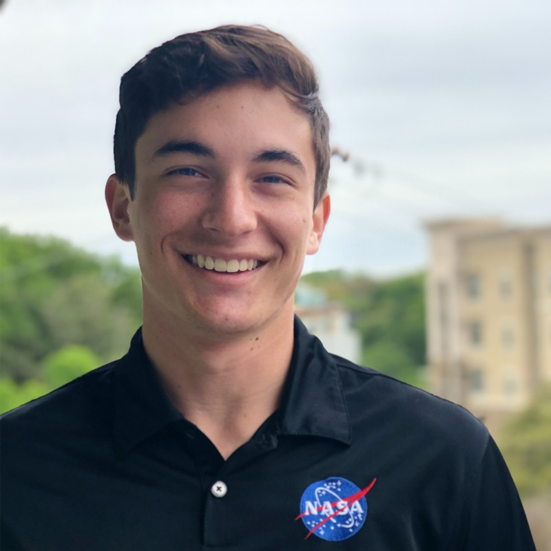
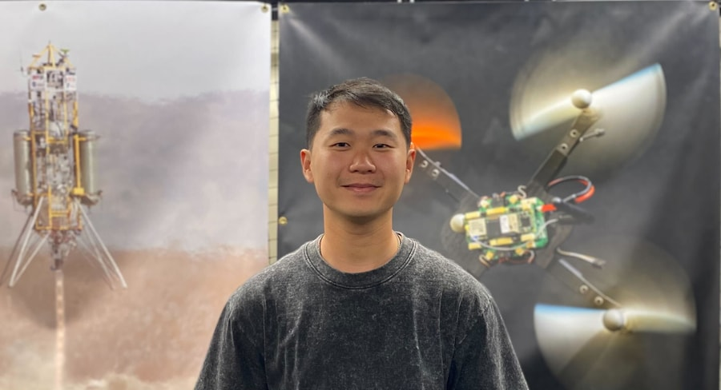

People
The researchers behind the Autonomous Controls Laboratory.
Incoming PhD students
The lab is recruiting its first Berkeley cohort. New members will be announced here. Interested in joining?
Announcing soon
Incoming PhD Student, Fall 2026
Announcing soon
Incoming PhD Student, Fall 2026
This could be you
Alumni
The alumni record combines former UW ACL members and earlier ACL alumni records.
Recent UW ACL alumni
Former members from the UW roster now listed as alumni on the Berkeley site.

Skye Mceowen PhD Student
Samuel Buckner Real-time trajectory planning, perception-in-the-loop, contingency awareness Samet Uzun PhD Student Chris Hayner Perception-aware planning Govind Chari Numerical optimization Natalia Pavlasek PhD Student Avi Mittal PhD Student
Jake Gonzales PhD Student
Justin Ganiban PhD Student
Jason Zhou Agile UAS development